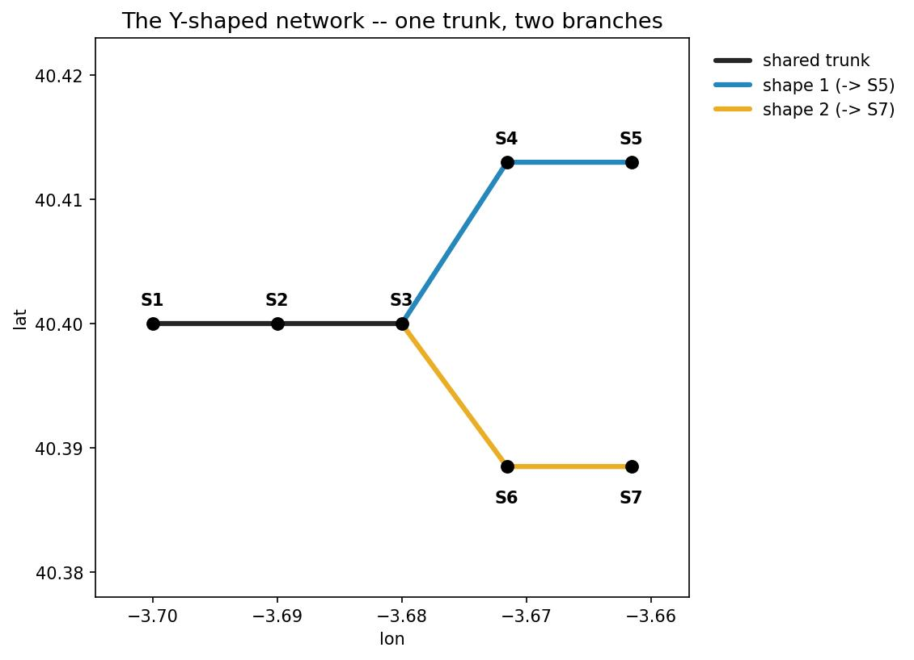
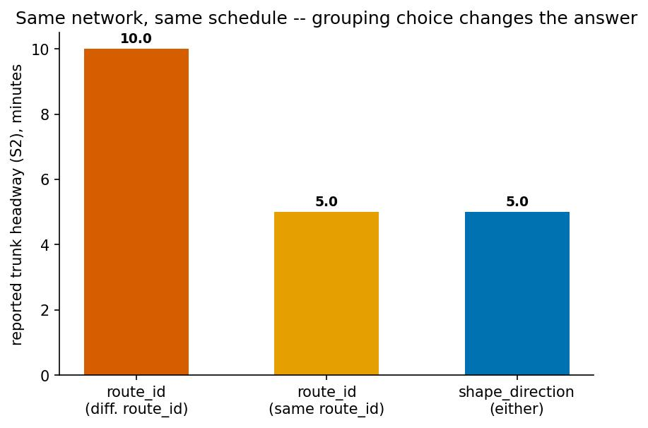
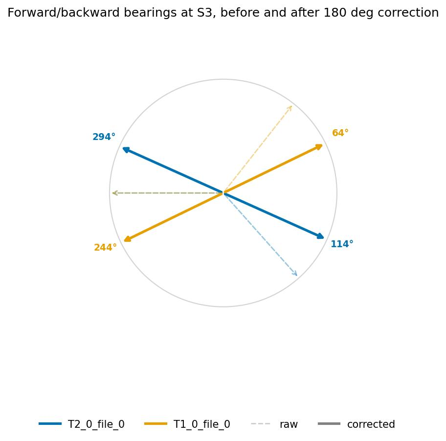
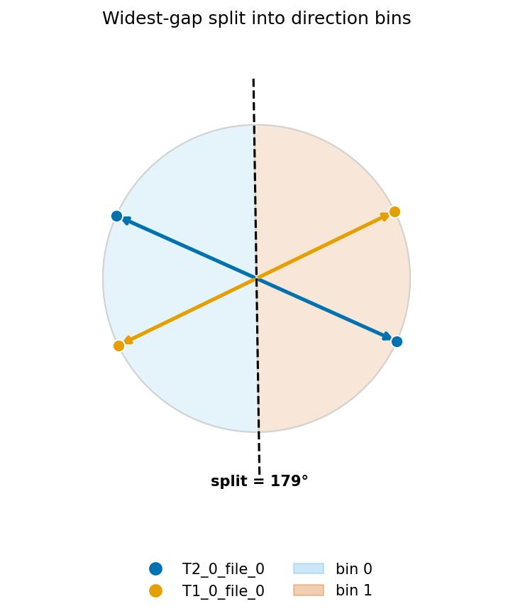
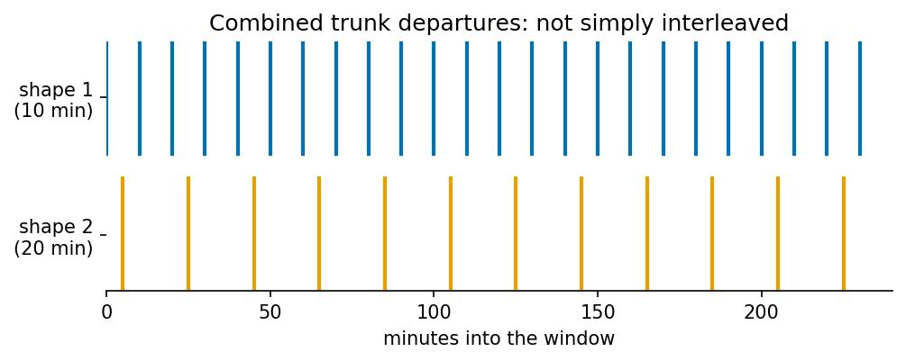

Direction & Headway Methodology¶
For the full worked figures, run the companion notebooks: see
Examples and
examples/direction_conflicts.ipynb.
Why not just use route_id/direction_id?¶
A naive headway calculation grouped by="route_id" gives an answer that
depends on an incidental data-modeling choice, not on the actual network
geometry. In the notebooks' worked Y-shaped network (trunk S1→S2→S3,
branches S3→S4→S5 and S3→S6→S7, each branch running every 10 minutes
offset by 5 minutes) the same physical trunk headway is reported as:
- 10 minutes, if the two branches are modeled as two different
route_ids (not combined — each counted separately). - 5 minutes, if the two branches happen to share one
route_id(combined).
pyGTFSHandler instead offers by="shape_direction", which clusters trips by
their actual geometric bearing at a stop, giving the correct combined 5
minutes regardless of how routes happen to be numbered in the source feed.


1. Reconciling forward/backward bearings at a stop¶
At a stop that a shape merely passes through, its incoming ("forward") and
outgoing ("backward") bearing should be exactly 180° apart — in practice they
rarely are (uneven shape_pt_sequence spacing, curved segments, GPS noise).
_reconcile_fwd_bwd(fwd, bwd, method="both") rotates both bearings toward
each other until they are exactly 180° apart, splitting the correction:
method="both"(default): the correction is split 50/50 between forward and backward.method="forward": forward is trusted as-is; backward absorbs the full correction.method="backward": backward is trusted as-is; forward absorbs the full correction.
Neither raw reading is assumed more trustworthy by default — hence the 50/50 split.

2. Clustering bearings into direction bins: the widest-gap split¶
Once every shape passing through a stop has a (corrected) forward/backward
bearing pair, _widest_gap_split clusters all of them into two local bins
(0/1) by finding the widest angular gap on the compass circle and
splitting at its midpoint:
for bearings sorted \(\theta_1 < \dots < \theta_n\) (with \(\theta_{n+1} = \theta_1 + 360°\) wrapping around).
Both the forward and backward point of every shape are added to this pool — not just one per shape. This matters: two shapes traveling the same real direction through a stop (bearings a fraction of a degree apart from geometry/GPS noise) would otherwise risk a spurious split between their two near-duplicate points; adding each shape's antipodal (reconciled backward) point too fills in the far side of the circle, so a genuinely small gap between near-duplicates is never mistaken for the widest gap. A stop with a real two-direction split (e.g. outbound ~95-100°, inbound ~275-280°) is correctly separated either way.

Generalizing to n directions¶
n_divisions=k requests \(2k\) sectors around the same split boundary:
(for even \(k\), the boundary is additionally offset by \(90°/k\)). k=1 recovers
the plain 2-bin case above. Increasing n_divisions only helps when the
underlying bearings actually spread across more of the compass — a stop where
every shape's bearing sits within the same half-circle (e.g. two branches off
one shared trunk, both capped under 90° apart by reconciliation against the
same trunk backward-bearing) reports the same single combined bin
regardless of n_divisions=1/2/3. Splitting such a stop further needs the
method parameter (below), or more shapes present (e.g. the reverse-direction
trips), not a higher n_divisions.
3. From per-stop bins to a route-wide direction_id¶
A stop's local 0/1 bin only means something at that stop — nothing ties
"0" at one stop to "0" at another. Shapes._assign_direction_ids_for_route
reconciles this across an entire route:
- Pick the stop with the most distinct
shape_ids present as the anchor — its local labels become the route's canonicaldirection_idvalues. - Walk every other stop, fewest distinct shapes first; at each stop, choose whichever of {keep local labels, flip both labels} agrees with more already-resolved shapes.
- Once every stop has been walked, each
shape_idcollapses to a singledirection_id: the majority value across all the stops it passes through. Any stop where that shape's local reading disagreed with the majority is flaggeddirection_conflict=True— this is a genuine branching ambiguity in the network, not a bug. The shape's actual local reading at a flagged stop is recoverable as1 - direction_id.
An unresolvable conflict is mathematically impossible with only two shapes present at a stop (2 points always define exactly 2 gaps whose midpoints are 180° apart, trivially reconciled). A genuine conflict needs an odd cycle in the stop-to-stop reconciliation graph, which needs at least 3 shapes — e.g. a route that branches, backtracks over a shared segment, and continues, combined with its own reverse-direction trip.
maps.conflict_map(feed) renders every stop with at least one
direction_conflict=True row as a flagged marker, and highlights a
conflicting shape's own stop markers when a route is selected.
4. Headway ("mean interval") at stops¶
FeedAnalysisMixin.get_headway_at_stops (and the edge-level counterpart,
FeedEdgeAnalysisMixin.get_headway_at_edges) summarize a stop's departure
times within a [start, end] window into a single "headway" number. This is
not a plain average of the gaps between departures — it is an RMS-style
statistic that penalizes irregular spacing more than a plain average would.
For sorted departures \(d_1 < d_2 < \dots < d_n\) within \([\text{start}, \text{end}]\), define the wrap-around gap that combines the wait before the first departure and the wait after the last one:
and the interior gaps \(g_i = d_i - d_{i-1}\) for \(i = 2, \dots, n\). Then:
Three schedules with the same average gap (600s, i.e. one bus every 10 minutes on average across 6 departures/hour) score very differently:
| Schedule | Departures (s) | Plain mean gap | RMS headway |
|---|---|---|---|
| perfectly regular | 0, 600, 1200, 1800, 2400, 3000, 3600 | 600s | 600s |
| one big gap | 0, 120, 240, 360, 480, 600, 3600 | 600s | much larger |
| bursty (clustered) | 0, 60, 120, 180, 3300, 3360, 3600 | 600s | much larger |
Squaring (RMS, not mean) reflects the inspection paradox: a rider arriving at a random time is more likely to land inside a long gap, so long gaps should weigh more than short ones of the same total duration.
Combining two independent, differently-timed services¶
Pooling two services with different, but commensurate, headways is not
their plain average or their harmonic mean under random-phase assumptions —
because their relative phase is fixed and known, not random. Example: shape 1
every 10 minutes from t=0, shape 2 every 20 minutes from t=5 (5-minute
offset), over a long window. The combined departures repeat exactly every
\(\mathrm{lcm}(10, 20) = 20\) minutes with gap pattern [5, 5, 10] (minutes), so:
— smaller than either service alone (pooling more services should mean more
frequent overall service), but neither the naive average ((10+20)/2 = 15)
nor the random-phase harmonic combination (\(1/(1/10+1/20) \approx 6.67\)).

how: combining sectors at a stop¶
get_headway_at_stops/get_headway_at_edges tag each direction sector i
with shape_direction_group_id = i % n_divisions, so a sector and its
diametrically opposite sector (same physical road, outbound vs. inbound)
always share one group_id. how controls what happens next:
"all": ignore grouping — return every sector's own headway as its own row."best": collapse the whole stop to one row — the single smallest headway across every sector, any direction."add"(mix_directions=False): first take the best (smallest) headway within eachgroup_id(so outbound and inbound at the same physical segment are never combined with each other), then harmonic-combine across groups:
"add" is the only mode that treats different group_ids (genuinely
different, combinable services through the same stop) as poolable, while
never blending two shapes that are alternatives for a rider in only one of
those directions.
Grounding: where to see this run¶
examples/direction_and_headway_methodology.ipynb walks all of the above on a
synthetic Y-shaped network and closes with a real Sevilla (TUSSAM) feed
headway map. examples/direction_conflicts.ipynb walks the conflict-graph
case (odd-cycle example) and the conflict_map/route-map visualizations in
detail.